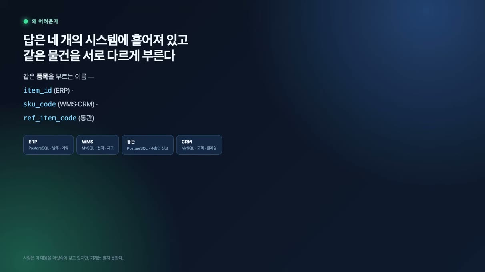
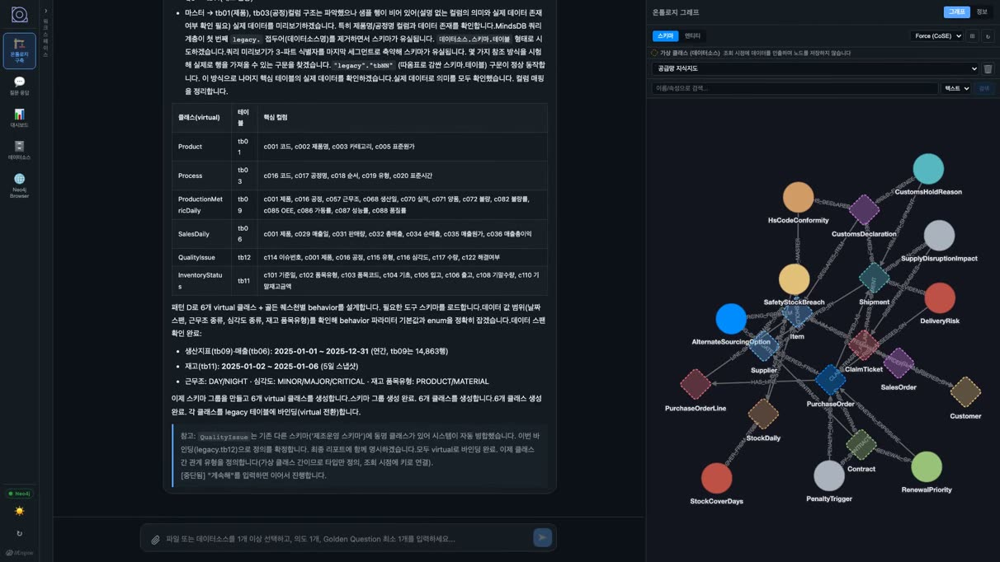
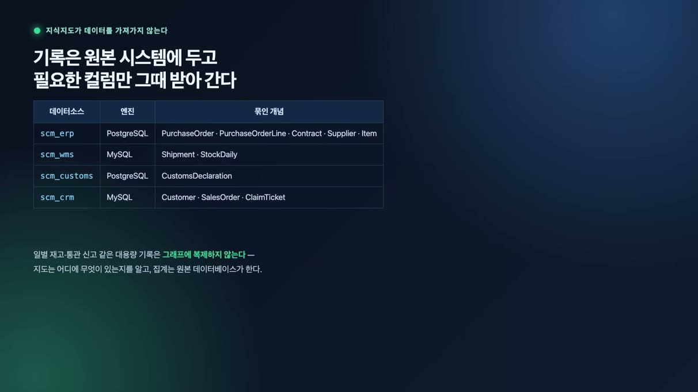
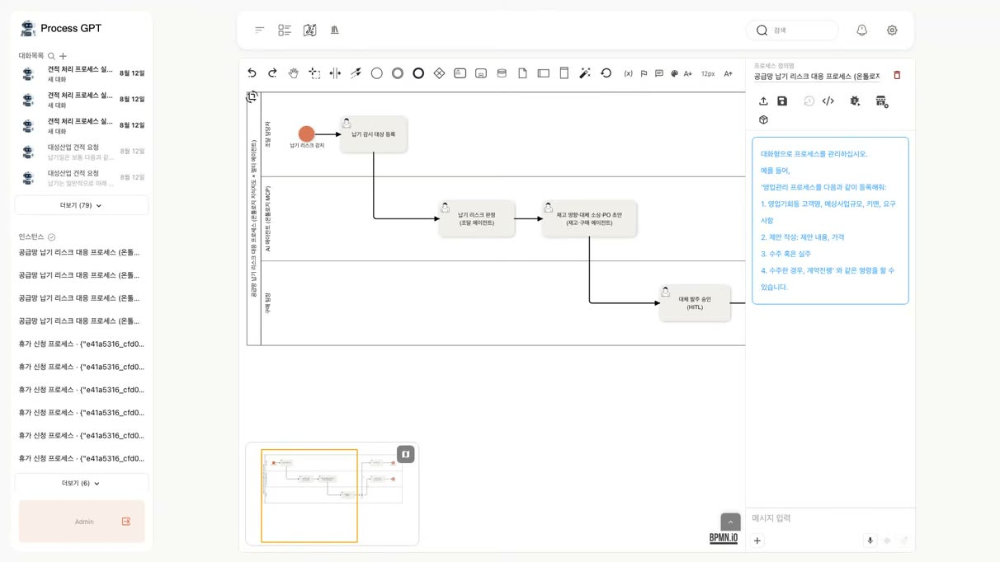
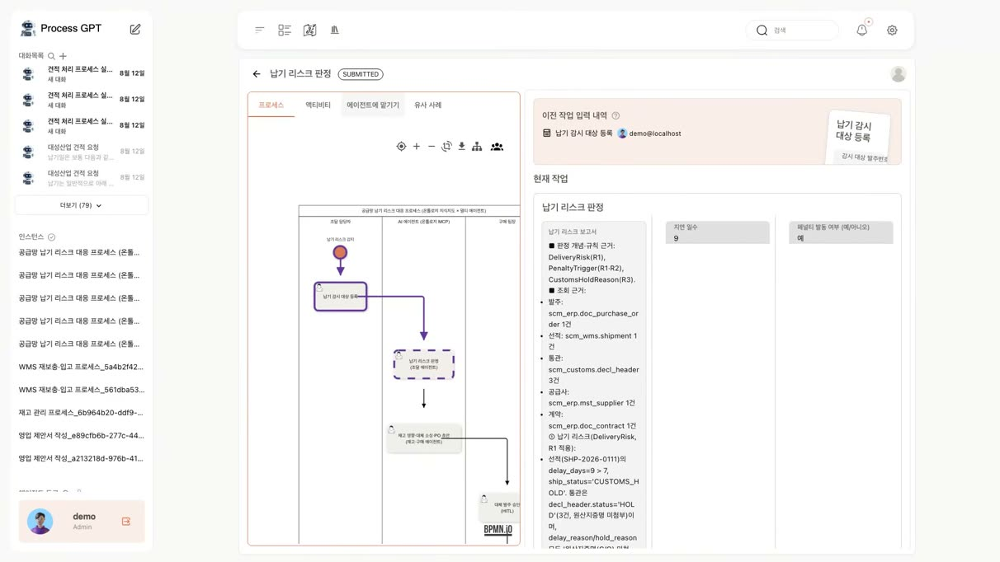
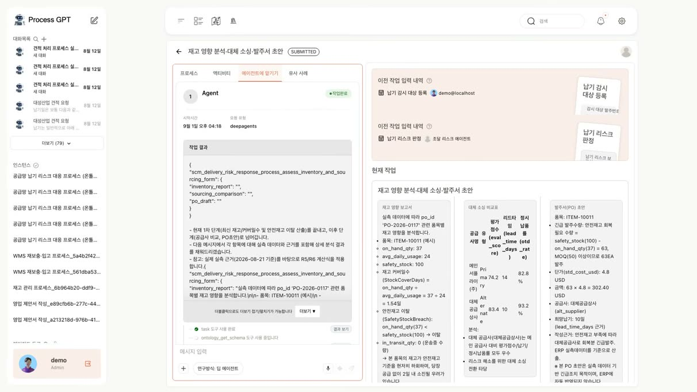
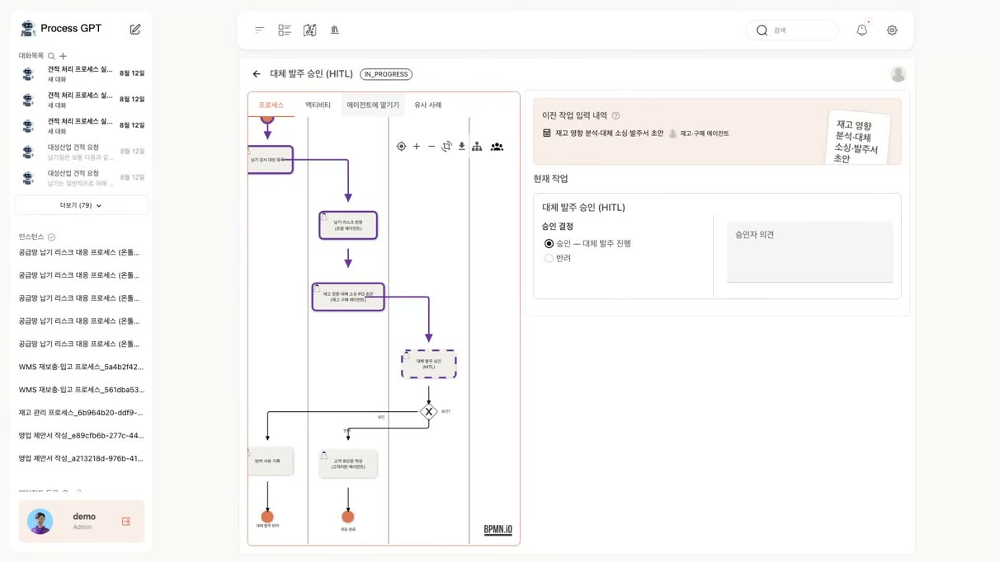
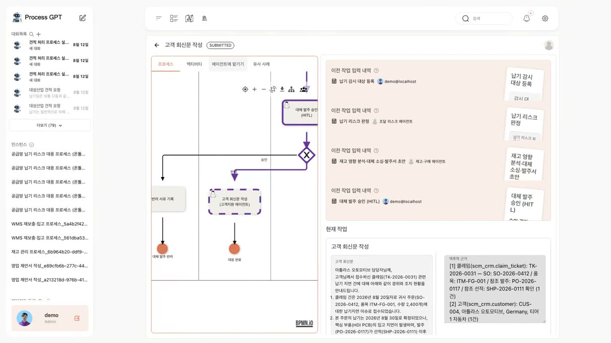

통관 보류 한 건이 부서를 타고 번질 때 — 공급망 납기리스크 대응
선적 한 건이 부산 세관에 묶였습니다. 발주 PO-20116-0117. 원산지 증명서가 빠졌다는 이유로 통관이 보류된 지 벌써 아흐레째입니다.
문제는 이게 한 부서 일로 끝나지 않는다는 겁니다.
- 📄 조달: 계약 페널티를 따져야 하고
- 📦 재고: 안전 재고가 무너지는지 봐야 하고
- 🛒 구매: 대체 공급사를 찾아야 하고
- 🎧 고객지원: 클레임에 답해야 합니다
사건 하나가 부서 경계를 타고 번지는 것. 이것이 공급망 업무의 본질적인 어려움입니다.
1. 답을 찾으려면 네 군데를 뒤져야 한다
발주와 계약은 ERP에, 선적과 재고는 창고 시스템에, 통관 신고는 관세 시스템에, 고객과 클레임은 CRM에 들어 있습니다. 데이터베이스 종류부터 다릅니다.
더 성가신 건 같은 물건을 시스템마다 다르게 부른다는 점입니다. 품목 하나를 ERP는 item_id, 창고는 SKU 코드, 관세 시스템은 reference_item_code라고 씁니다. 담당자는 이 대응 관계를 경험으로 알고 있지만, 그 지식은 어디에도 적혀 있지 않습니다.

같은 품목 하나를 ERP는 item_id, 창고(WMS)는 sku_code, 관세 시스템은 ref_item_code라고 부른다. 담당자만 알고 있고 어디에도 적혀 있지 않은 지식이다.
2. 온톨로지 스튜디오 — 대응 관계를 적어 둔다
온톨로지 스튜디오가 하는 일이 바로 그 대응 관계를 적어 두는 것입니다. 네 시스템에 흩어진 개념을 하나의 지식 지도로 읽고, 관계마다 어느 컬럼과 어느 컬럼이 같은 것인지를 조인 규칙으로 명시합니다.
데이터를 한곳에 모으는 게 아니라, 흩어진 그대로 두고 이어 두는 방식입니다. 덧붙이자면 이 제품은 설치 한 번으로 개인 컴퓨터에서 그대로 도는 데스크톱 앱입니다.
지도에는 두 종류의 개념이 담긴다
- 🗄️ 기록 개념: 실제 시스템의 테이블에 묶인 것 — 발주, 선적, 재고, 클레임
- 📐 규칙 개념: 데이터가 아예 없는 것 — 납기 리스크, 페널티 발동, 안전재고 이탈, 재고 커버리지
두 번째가 곧 업무 규칙입니다. 며칠부터 페널티인지, 커버리지는 어떻게 계산하는지가 여기 적혀 있습니다. 규칙이 바뀌면 에이전트의 프롬프트가 아니라 이 지도를 고치면 됩니다.
업무 규칙을 프롬프트에 적어 두면, 규칙이 바뀔 때마다 에이전트를 다시 조율해야 합니다. 지식 지도에 적어 두면, 규칙을 고치는 사람은 현업 담당자가 됩니다.

온톨로지 스튜디오에서 네 시스템의 개념을 하나의 지식 지도로 읽고, 관계마다 어느 컬럼이 어느 컬럼과 같은지를 조인 규칙으로 명시한다.
3. 옮기지 않는 것을 정하는 일
한 가지 선택을 더 짚고 넘어가겠습니다. 일별 재고나 통관 신고처럼 양이 많은 기록은 지식 지도로 옮기지 않습니다. 원본 시스템을 그대로 두고, 물어볼 때 필요한 컬럼만 그 자리에서 받아옵니다.
시계열을 전부 그래프에 펼쳐 놓으면 저장 공간도 토큰도 감당이 안 됩니다. 지도는 무엇이 어디 있는지만 알고, 계산은 원본 데이터베이스에 맡기는 겁니다.
발주·계약
item_id
선적·재고
SKU 코드
통관 신고
reference_item_code
고객·클레임
데이터는 원래 자리에 두고, 같은 것을 같다고 적어 둔 지도만 위에 얹는다.

일별 재고나 통관 신고처럼 양이 많은 기록은 지도로 옮기지 않는다. 원본 시스템을 그대로 두고 물어볼 때 필요한 컬럼만 그 자리에서 받아온다.
4. 지식이 갖춰져도 업무가 저절로 돌지는 않는다
누가 언제 무엇을 하고, 어디서 사람이 개입할지는 업무의 순서에 속하는 문제입니다. Process GPT는 그 순서를 BPMN 다이어그램으로 잡습니다. 왼쪽 레인은 사람, 오른쪽 레인은 에이전트입니다. 알아서 판단하는 에이전트와 반드시 사람이 결정해야 하는 지점이 같은 그림 안에서 함께 놓입니다.

Process GPT는 업무의 순서를 BPMN으로 잡는다. 알아서 판단하는 에이전트와 반드시 사람이 결정해야 하는 지점이 같은 그림 안에 함께 놓인다.
5. 실제로 돌려보기 — 사람이 하는 일은 여기까지
조달 담당자가 문제가 된 발주 번호와 고객을 적어 감시 대상으로 등록합니다. 사람이 직접 하는 일은 여기까지입니다. 등록된 내용이 다음 단계의 입력으로 넘어가고, 프로세스가 알아서 다음 담당자에게 일을 배정합니다.
① 조달 에이전트
무엇을 어떤 순서로 조회하라고는 알려주지 않았습니다. 에이전트가 먼저 지식 지도를 읽어 개념이 어디에 묶여 있는지 파악하고, 필요한 컬럼을 그때그때 받아 질의를 직접 만들어 실행합니다.
결과: 선적은 통관 보류 상태, 지연은 아흐레, 사유는 원산지 증명 미첨부. 계약에 "납기를 넘기면 건당 2% 페널티"라고 되어 있으니 조건에 걸렸고, 예상 페널티는 발주 금액 $81,307의 2% = $1,626입니다.
여기서 눈여겨볼 것은 근거를 남기는 방식입니다. 어떤 규칙을 적용했는지, 어느 데이터 소스의 어느 테이블에서 몇 건을 받았는지가 답변에 함께 적혀 있습니다.
그리고 이 질의는 시스템 경계를 넘나들었습니다. 발주는 ERP, 선적은 창고 시스템이라 데이터베이스가 다른데도 한 문장으로 조인했습니다. 지식 지도에 "발주 번호"와 "선적의 참조 발주 번호"가 같은 것이라고 적어 둔 덕분입니다.
② 재고·구매 에이전트
이어받은 에이전트는 앞 단계 보고서를 입력으로 받아 안전재고가 무너졌는지 확인하고 대체 공급사를 비교합니다. 업무 흐름이 곧 에이전트 사이의 인터페이스가 되는 셈입니다.

조달 에이전트의 결과. 통관 보류 9일, 사유는 원산지 증명 미첨부, 계약 조건에 따른 예상 페널티 $1,626 — 그리고 어느 테이블에서 몇 건을 받았는지가 함께 적힌다.
▶ 재고·구매 에이전트 — 앞 단계 보고서를 입력으로 이어받는다

이어받은 에이전트가 안전재고가 무너졌는지 확인하고 대체 공급사를 비교한다. 업무 흐름이 곧 에이전트 사이의 인터페이스가 된다.
6. 그리고 여기서 멈춘다
대체 발주는 돈이 나가는 결정이기 때문입니다.
- 🔒 에이전트는 모두 읽기 전용이고, 발주서도 초안까지만 만듭니다.
- ✋ 팀장이 승인 버튼을 누르기 전에는 다음 단계가 시작되지 않습니다.
- 🔀 사람이 고른 값에 따라 게이트웨이가 경로를 가르고, 그 판단은 기록으로 남습니다.
승인이 떨어지자 고객지원 에이전트가 회신문을 씁니다. 넘겨받은 내용을 그대로 옮기지 않고, 클레임 → 고객 → 주문 → 발주 → 선적으로 하나씩 되짚어 확인한 다음 문장을 만듭니다. CRM에서 출발해 ERP와 창고 시스템을 다시 거쳤습니다. 그리고 그 결과가 폼에 그대로 채워집니다. 회신문 본문과 함께 어느 시스템의 어느 테이블을 몇 건 확인했는지가 남습니다.
처음의 통관 보류 한 건이, 고객에게 보내는 답장으로 이어진 겁니다.

여기서 멈춘다. 대체 발주는 돈이 나가는 결정이라 에이전트는 초안까지만 만들고, 팀장이 승인 버튼을 누르기 전에는 다음 단계가 시작되지 않는다.

승인 후 고객지원 에이전트가 회신문을 쓴다. 클레임 → 고객 → 주문 → 발주 → 선적으로 되짚어 확인한 근거가 본문과 함께 남는다.
7. 결국 남는 것은 기록
에이전트가 어떤 도구를 어떤 값으로 불렀고 무엇을 돌려받았는지가 단계마다 쌓여 화면에서 그대로 보입니다. 답이 그럴듯한지를 따지는 게 아니라, 어디서 나온 답인지를 따질 수 있다는 뜻입니다.
| 무엇을 | 어디에 둔다 |
|---|---|
| 🗺️ 지식 (개념·조인 규칙·업무 규칙) | 지식 지도 ↗ 온톨로지 스튜디오 |
| 🔀 순서와 책임 (누가 언제, 어디서 사람이 개입) | 업무 흐름 (BPMN) ↗ 소개 페이지에서 보기 |
| 🧾 판단의 근거 (툴·인자·응답) | 실행 기록 ↗ 소개 페이지에서 보기 |
| 🧠 개념을 시스템에 매핑 | 온톨로지 연결 ↗ 소개 페이지에서 보기 |
커넥터를 늘리지 않고도 다룰 수 있는 업무를 늘려가는 방법입니다. 새 시스템을 붙이는 대신, 이미 있는 시스템들 사이의 관계를 적어 두는 쪽으로 투자하는 것입니다.
자세한 내용은 Process GPT와 온톨로지 스튜디오 소개 페이지에서 확인하고, process-gpt.io에서 직접 사용해 보세요.
이번 실행에서 사용된 툴 호출과 인스턴스 상태가 그대로 남는다. 따질 수 있는 것은 답의 그럴듯함이 아니라 답의 출처다.